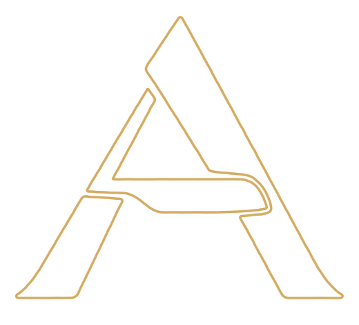

La main.
Le détail.
Homme · Enfant · Barbe
Une scène de campagne consacrée aux gestes de la coupe et aux contours de la barbe.
Aymen,à Pontchâteau.
2 rue Maurice SambronLa façade réelle de Coiffure Aymen, avec son enseigne jaune et orange et son entrée vitrée en angle.
